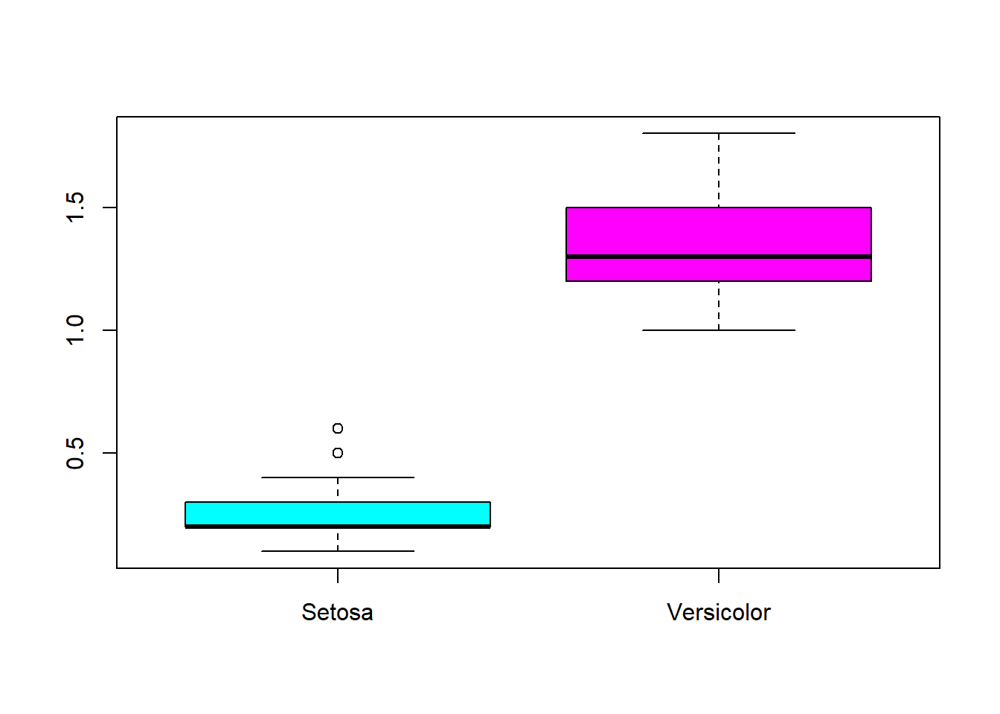
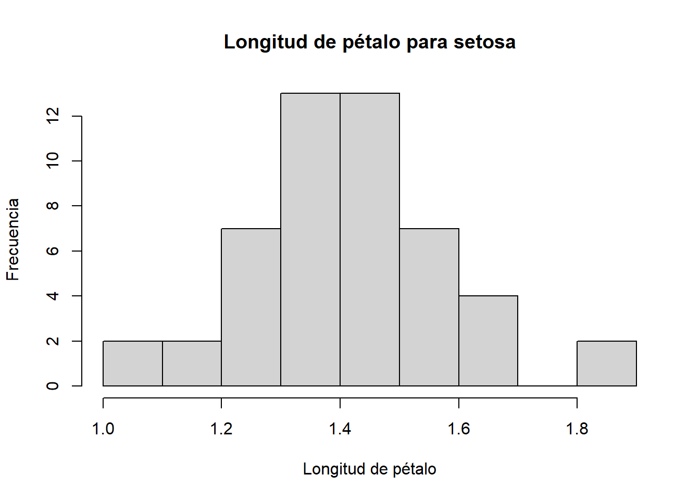
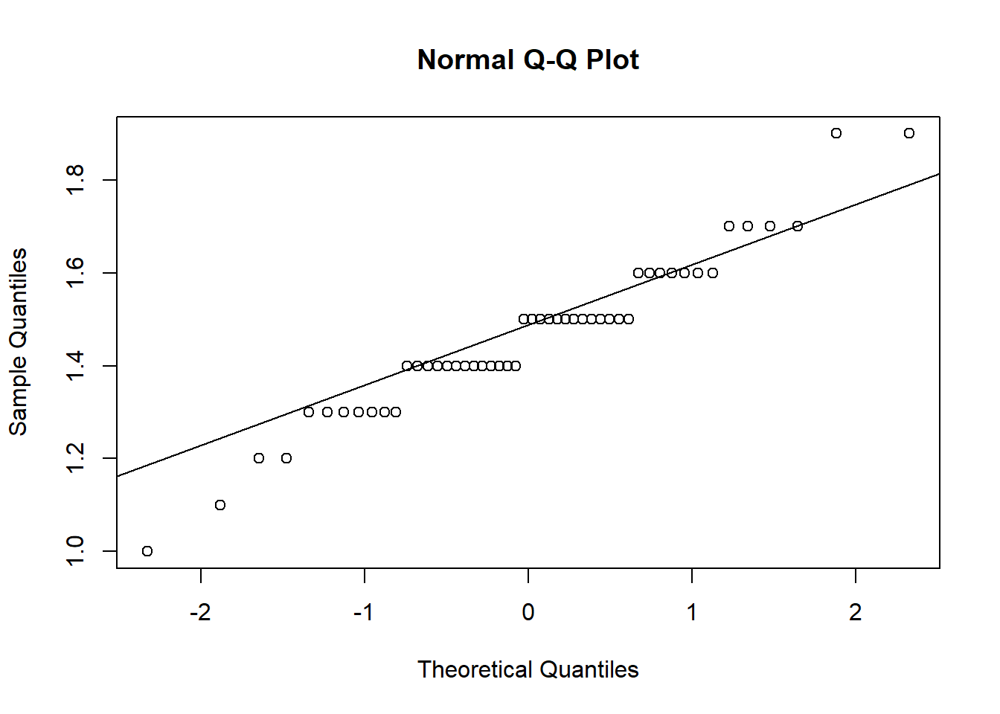
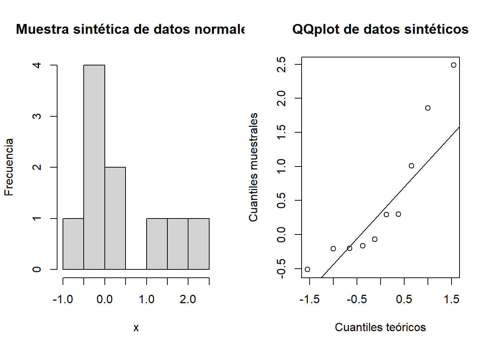
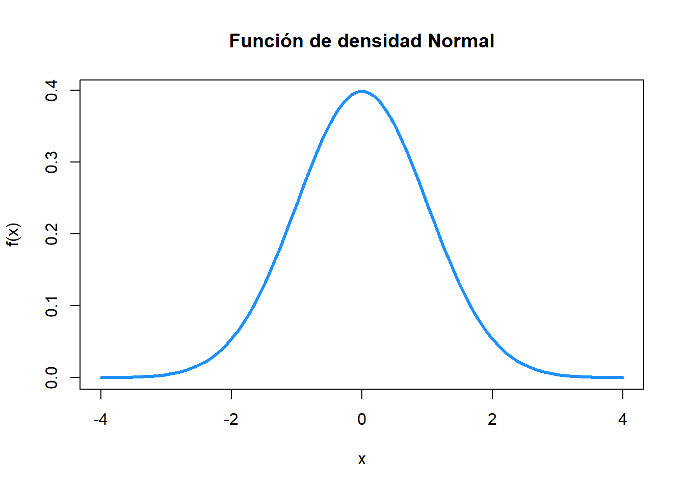
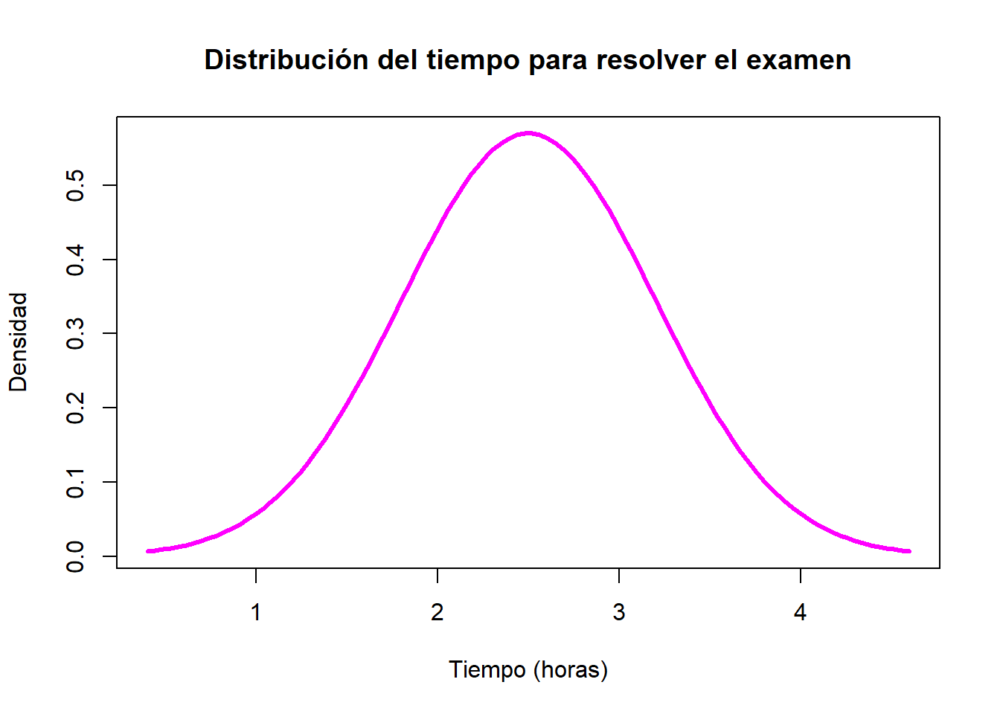
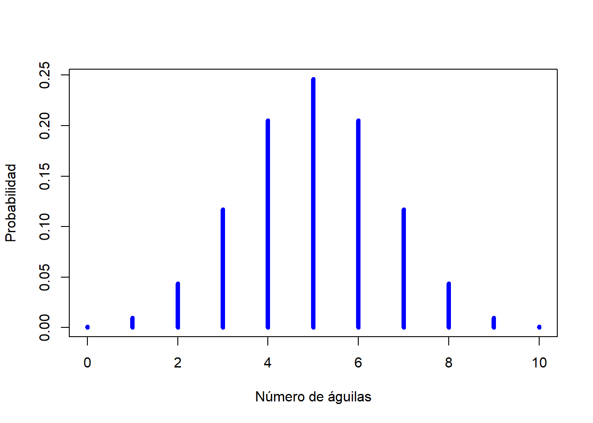

La inferencia estadística consiste en hacer estimaciones (afirmaciones) de cantidades de interés desconocidas, muchas veces llamadas parámetros, a través de una muestra de una población. Hay tres tipos básicos de inferencia:
Inferencia puntual. Da un único valor para estimar una cantidad de interés desconocida, como la media o la proporción.
Inferencia por intervalo. Consiste en un rango de valores que se utiliza para estimar un parámetro desconocido de una población. Este intervalo viene acompañado de un nivel de confianza, que indica la probabilidad de que el intervalo contenga el valor real del parámetro.
Pruebas de hipótesis. Procedimientos que analizan la cantidad de información a favor o en contra de una hipótesis de trabajo.
3.1 Inferencia puntual
Hay varios estimadores para una cantidad de interés. Por ejemplo, para estimar la media \(\mu\) de una población, podemos usar el promedio simple de la muestra, \(\bar{x}\), o la mediana de la muestra, \(\tilde{x}\). No obstante, se sabe que ciertos estimadores tienen mejores propiedades estadísticas que otros. A continuación se muestran algunos estimadores puntuales que se ocupan en diversos procedimientos.
Media poblacional \(\mu\). \[ \bar{x} = \frac{1}{n}\sum_{i=1}^n x_i.\]
Desviación estándar poblacional \(\sigma\). \[ s = \sqrt{\frac{1}{n-1}\sum_{i=1}^n (x_i-\bar{x})^2}.\]
Proporción de éxitos \(p\). \[\hat{p} = \frac{\text{\# de éxitos}}{\# \text{ de observaciones}}.\]
Coeficiente de correlación entre dos variables \(\rho\). \[ \hat{\rho} = \frac{\sum_{i=1}^n (x_i - \bar{x})(y_i - \bar{y})}{\sqrt{\sum_{i=1}^n (x_i - \bar{x})^2 \sum_{i=1}^n (y_i - \bar{y})^2}},\]
3.2 Intervalos de confianza
Se pueden crear intervalos de confianza para distintas cantidades de interés. Aquí mostraremos algunos de los casos más comunes.
3.2.1 Intervalo para la media de una población
Si tenemos una muestra de una variable cuantitativa de una población de interés, entonces podemos crear intervalos de confianza para el valor medio de dicha población. Sea \(\mu\) la media de la población. Un intervalo del \(100(1-\alpha)\)% de confianza para \(\mu\) está dada por: \[ \bar{x}\pm t_{1-\alpha/2}\frac{s}{\sqrt{n}},\] donde \(s\) representa la desviación estándar muestral de los datos, \(n\) es el número de observaciones, y \(t_{1-\alpha/2}\) es un cuantil de una distribución t-Student con \(n-1\) grados de libertad.
Ejemplo: Suponga que deseamos estimar la longitud media de los pétalos de una flor iris en su variante setosa. El siguiente código nos muestra las estimaciones puntuales y por intervalo a partir de una muestra de tamaño 50 que se encuentra en el dataset iris.
x = iris$Petal.Length[1:50]t.test(x, conf.level =0.99, mu =2) # crea un intervalo de confianza para los datos del vector x
One Sample t-test
data: x
t = -21.906, df = 49, p-value < 2.2e-16
alternative hypothesis: true mean is not equal to 2
99 percent confidence interval:
1.396181 1.527819
sample estimates:
mean of x
1.462
3.2.2 Intervalo para la diferencia de medias de dos grupos
Suponer que se tiene una muestra de dos grupos en los que se realiza la misma medición. Denotamos a estas muestras por \(x_1,x_2,\ldots,x_n\) y \(y_1,y_2,\ldots, y_n\). Sean \(\mu_x\) y \(\mu_y\) las medias poblacionales de cada muestra, respectivamente. Se desea saber si hay evidencia significativa de que ambos grupos, en promedio, sean iguales. Es decir, se desea saber si es razonable pensar que \(d = \mu_x - mu_y = 0\). Para esto, construimos un intervalo de confianza para \(d\). Los resultados se interpretan como sigue:
Si el intervalo contiene a 0, entonces no hay diferencia significativa entre \(\mu_x\) y \(mu_y\).
Si el intervalo es positivo, entonces \(\mu_x > \mu_y\).
Si el intervalo es positivo, entonces \(\mu_x < \mu_y\).
Por simplicidad, se omiten las fórmulas para la obtención del intervalo.
Ejemplo: Suponga que se desea comparar la longitud media del ancho de los pétalos de la variante setosa de iris contra la variante versicolor. El intervalo de confianza del 95% muestra que la variante versicolor tiene pétalos más anchos que la variante setosa por al menos 0.25 cm, y hasta 1.33 cm.
x = iris$Petal.Width[1:50] # muestra 1, setosay = iris$Petal.Width[51:100] # muestra 2, versicolort.test(x, y) # intervalo para la diferencia d = x-y
Welch Two Sample t-test
data: x and y
t = -34.08, df = 74.755, p-value < 2.2e-16
alternative hypothesis: true difference in means is not equal to 0
95 percent confidence interval:
-1.143133 -1.016867
sample estimates:
mean of x mean of y
0.246 1.326
El procedimiento anterior se conoce como prueba t para comparación de medias y es un procedimiento paramétrico, es decir, que supone que los datos siguen una distribución de probabilidad paramétrica, en este caso concreto, una distribución Normal.
Existen pruebas no paramétricas para comparar medias de grupos. Estas pruebas no hacen supuestos sobre el comportamiento de los datos. Entre ellas se encuentra la prueba de Wilcox.
wilcox.test(x, y, conf.int =TRUE) # prueba no parametrica de comparación de medias
Wilcoxon rank sum test with continuity correction
data: x and y
W = 0, p-value < 2.2e-16
alternative hypothesis: true location shift is not equal to 0
95 percent confidence interval:
-1.100058 -1.000032
sample estimates:
difference in location
-1.09994
boxplot(x, y, col =c("cyan", "magenta"), names =c("Setosa", "Versicolor"))

3.2.3 Intervalo para la proporción de éxitos
Si se tiene una muestra de una variable categórica binaria, la cual representa la presencia o ausencia de una característica en los individuos de la polbación, podemos estimar la proporción de éxitos y dar un intervalo de confianza.
Ejemplo: Suponga que se desea dar un intervalo de confianza para la proporción de individuos que presentan neumonía a partir de la base de datos de COVID-19. El intervalo del 95% de confianza muestra que entre el 19.8% y el 20.1% de la población padece cuadros de neumonía.
D =read.csv("Data/COVID19MEXICO.csv", header =TRUE, as.is =TRUE)x =sum(D$NEUMONIA ==1)n =dim(D)[1]prop.test(x, n)
1-sample proportions test with continuity correction
data: x out of n, null probability 0.5
X-squared = 64475, df = 1, p-value < 2.2e-16
alternative hypothesis: true p is not equal to 0.5
95 percent confidence interval:
0.1977301 0.2014430
sample estimates:
p
0.1995801
3.2.4 Intervalo para la diferencia de proporciones de éxito
Suponga que se tienen dos poblaciones y en cada una se registra la presencia o ausencia de una característica. Denotamos las muestras obtenidas por \(x_1,x_2,\ldots,x_n\) y \(y_1,y_2,\ldots, y_n\), y sean \(p_x\) y \(p_y\) la proporción de éxitos en cada muestra, respectivamente. Queremos saber si hay un diferencia significativa en las proporciones de éxito de cada grupo. Para esto, creamos un intervalo de confianza para \(d=p_x-p_y\). El resultado se interpreta como sigue:
Si el intervalo contiene a 0, entonces no hay diferencia significativa entre \(p_x\) y \(p_y\).
Si el intervalo es positivo, entonces \(p_x > p_y\).
Si el intervalo es positivo, entonces \(p_x < p_y\).
Por simplicidad en la presentación, se omiten las fórmulas del intervalo.
Ejemplo. Se desea saber si la proporción de hombres con neumonía es distinta a la proporción de mujeres con ese padecimiento. De acuerdo al intervalo de confianza, hay entre 6.6% y 7.4% más casos de neumonía en hombres que en mujeres, con un 95% de confianza.
2-sample test for equality of proportions with continuity correction
data: c(x, y) out of c(nx, ny)
X-squared = 1355.3, df = 1, p-value < 2.2e-16
alternative hypothesis: two.sided
95 percent confidence interval:
0.06649761 0.07410875
sample estimates:
prop 1 prop 2
0.2395285 0.1692253
3.3 Pruebas de hipótesis
En Estadística, una hipótesis es una afirmación sobre alguna carcterística de la población de interés. Más aún, una prueba estadística de hipótesis es un procedimiento mediante el cual se analiza si la información disponible de la población aporta evidencia a favor o en contra de una hipótesis.
Los procedimientos de prueba de hipótesis requieren de cuatro elementos clave para su implementación:
Dos hipótesis de trabajo, la hipótesis nula\(H_0\) y la hipótesis alternativa\(H_1\).
Una estadística de prueba, \(T(x_1,x_2,...,x_n)\), cuyos valores ayudan a determinar si la hipótesis nula parece razonable o no.
La distribución de probabilidad de la estadística de prueba\(T(x_1,x_2,...,x_n)\) bajo el supuesto de que \(H_0\) es cierta.
El \(p\)-valor de la prueba, el cual indica la probabilidad de observar algo igual o aún más extremo de lo que los datos observados indican. Si el \(p\)-valor es muy pequeño, entonces hay evidencia contra \(H_0\) y se opta por rechazar la hipótesis nula. Por el contrario, si el \(p\)-valor es my grande, entonces no hay evidencia en contra de \(H_0\) y se opta por no rechazar la hipótesis nula. Es importante señalar que no rechazar\(H_0\) no implica aceptar\(H_0\).
Los siguientes ejemplos muestran situaciones donde es útil realizar pruebas de hipótesis.
Ejemplo: Una mujer afirma tener la habilidad de avidinar la forma en la que se preparó un té en Inglaterra, es decir, si se añade primero el té y luego la leche o viceversa. Para analizar esta afirmación, se realiza un experimento en el que se le dan 8 tasas de té, 4 de las cuales fueron preparadas añadiendo primero la leche y luego el té, mientras que en las otras 4 se añadió primero el té y luego la leche. Se utiliza el número de aciertos de cada tipo de preparación para determinar si la mujer tiene la habilidad o no.
Ejemplo: Se mide la densidad promedio de los huesos de la mano de un grupo de mujeres de la tercera edad que sufren de osteoporosis. Se desea saber si estos datos siguen una distribución Normal.
Ejemplo: Se mide el ritmo cardiaco de 50 niños y 50 niñas recién nacidos. Se desea saber si existe alguna diferencia en el ritmo cardiaco de estos grupos.
3.3.1 Errores Tipo I y Tipo II
En un procedimeinto de pruebas de hipótesis pueden ocurrir alguno de los siguientes cuatro escenarios:
Realidad
Decisión
\(H_0\)cierta
\(H_0\)falsa
Rechazar\(H_0\)
Error Tipo I
Correcto
No rechazar\(H_0\)
Correcto
Error Tipo II
Es posible controlar la probabilidad de ambos tipos de errores, pero no de forma simultanea. Es decir, si bajamos la probabilidad de Error Tipo I, entonces incrementamos la probabilidad de Error Tipo II y viceversa. Es necesario analizar el problema en cuestión y determinar cuál de los dos tipo de error es más importante controlar.
El nivel de significancia de una prueba de hipótesis se denota por \(\alpha\) y representa la probabilidad de Error Tipo I. Por ejemplo, si \(\alpha=0.05\), entonces estamos diciendo que \(P(\)Rechazar \(H_0 | H_0\) es cierta\() = 0.05\).
El poder o potencia de una prueba de hipótesis está dado por 1-\(\beta\), donde \(\beta\) representa la probabilidad de Error Tipo II. Dicho de otra forma, la potencia de una prueba de hipótesis nos indica que tan buena es la prueba para rechazar \(H_0\) cuando \(H_0\) debe ser rechazada.
Típicamente, para aceptar o rechazar una prueba de hipótesis se fija el nivel de significancia \(\alpha\), es decir, la probabilidad de error Tipo I. Si el \(p\)-valor es menor al nivel de significancia, entonces se rechaza la hipótesis nula, y si el p-valor es más grande que el nivel de significancia, entonces no se rechaza \(H_0\). En la práctica, se suele usar niveles de significancia de 0.1, 0.05 y 0.01, siendo 0.05 el valor más común. Mediante este procedimiento cotrolamos el error Tipo I.
3.3.2 Revisión del supuesto de normalidad
Si se tiene un conjunto de datos de una cierta población, una de las tareas que se repite constantemente es revisar si hay evidencia de que los datos vengan de una distribución Normal. Para esto, podemos usar algunas gráficas para evaluar visualemente el supuesto de normalidad, o bien, pruebas de hipótesis.
La primera forma de revisar normalidad es mediante un histograma. Si el histograma es simétrico, entonces tenemos evidencia de normalidad.
# longitud de pétalo de la especie setosax = iris$Petal.Length[iris$Species =="setosa"] hist(x, main ="Longitud de pétalo para setosa", xlab ="Longitud de pétalo", ylab ="Frecuencia")

En este ejemplo, la longitud del pétalo de la variante setosa de iris parece seguir una distribución Normal.
Otra forma de analizar normalidad es a través de un QQplot (gráfica de cuantiles).
qqnorm(x) # gráfica de cuantilesqqline(x) # línea que deberían seguir los datos si hay normalidad

La gráfica anterior muestra que algunos puntos se alejan de la línea teórica, lo cual podría ser evidencia de falta de normalidad.
La forma de evaluar normalidad más fácil de interpretar es mediante una prueba de hipótesis. En este caso, usaremos la prueba de Shapiro-Wilk.
shapiro.test(x)
Shapiro-Wilk normality test
data: x
W = 0.95498, p-value = 0.05481
El p-valor de la prueba de Shapiro es grande, por lo que no hay suficiente evidencia para rechazar la hipótesis de normalidad.
Si el tamaño de muestra es pequeño, ninguna de las estrategias anteriores es completamente concluyente. Abajo se muestra un código en el que se simulan 10 datos de una distribución Nomal estándar, es decir, con media \(\mu = 0\) y desviación estándar \(\sigma = 1\). Aquí se puede ver que el supuesto de normalidad puede ser rechazada, aún cuando los datos realmente son normales. No obstante, la probabilidad de cometer un error es pequeña.
Shapiro-Wilk normality test
data: x
W = 0.83742, p-value = 0.04109
par(mfrow =c(1,2))hist(x, main ="Muestra sintética de datos normales", xlab ="x", ylab ="Frecuencia")qqnorm(x, main ="QQplot de datos sintéticos", xlab ="Cuantiles teóricos", ylab ="Cuantiles muestrales")qqline(x)

3.3.3 Pruebas de bondad de ajuste para proporciones
Suponer que tenemos una variable categórica con 3 o más caategorías. Un ejemplo de esto puede ser el nivel socioeconómico (bajo, medio y alto). El objetivo es saber si las frecuencias de las distitnas categorías concuerdan con ciertas frecuencias propuestas por un investigador. A este tipo de procedimientos se les conoce como pruebas de bondad de dajuste.
Ejemplo: Se tienen los conteos (10, 35, 55) de las clases (alto, medio, bajo) y se piensa que estos conteos deberían seguir una proporción (1%, 20%,79%). ¿Los datos concuerdan con lo que se espera?
x =c(10,25,55)p =c(0.01, 0.2, 0.79)test =chisq.test(x, p = p)
Warning in chisq.test(x, p = p): Chi-squared approximation may be incorrect
print(test)
Chi-squared test for given probabilities
data: x
X-squared = 98.379, df = 2, p-value < 2.2e-16
Se rechaza la hipótesis nula, por lo que al menos una de las proporciones es distinta de la establecida. Para saber cual, analizamos los residuales estandarizados de las frecuencias.
test$expected
[1] 0.9 18.0 71.1
test$stdres
[1] 9.640566 1.844662 -4.166596
Ejemplo: Lanzamiento de un dado.
x =c(60, 90, 120, 300, 230, 150)test =chisq.test(x)print(test)
Chi-squared test for given probabilities
data: x
X-squared = 259.47, df = 5, p-value < 2.2e-16
Suponga que tenemos dos variables categóticas \(X\) y \(Y\) , la primera con \(k\) categorías y la segunda con \(l\) categorías. El objetivo eas saber si existe una relación entre ambas variables, o si son independientes.
Ejemplo: Se desea saber si existe asociación entre el color de cabello y el color de ojos.
Es posible crear una variable con sólo algunas categorías de una variable categórica.
pais =ifelse(D$PAIS_NACIONALIDAD =="México", "Mexico", "otro")
3.4 Apéndice: Distribuciones de probabilidad en R
En R están implementadas todas las distribuciones de probabilidad clásicas: Normal, Binomial, Geométrica, Poisson, Beta, Gamma, Cauchy, t-Student, F de Fisher, etc.
Hay cuatro comandos básicos para trabajar con estas distribuciones:
dnorm: evaluar la función de densidad de una v.a. normal
pnorm: evaluar la función de distribución acumulada
qnorm: permite calcular cuantiles de la distribución normal
rnorm: genera números aleatorios de la distribución normal
3.4.1 Distribución Normal
La distribución Normal o Gaussiana es un modelo de probabilidad cuya función de densidad tiene forma de campana y está dada por la siguiente ecuación: \[ f(x) = \frac{1}{\sqrt{2\pi} \sigma}\exp\left\{-\frac{1}{2\sigma^2} (x-\mu)^2\right\},\] donde \(\mu\) representa la media poblacional y \(\sigma\) representa la desviación estándar poblacional.
x <-seq(-4, 4, length.out =100)fx <-dnorm(x)plot(x, fx, ylab ="f(x)",main ="Función de densidad Normal",type ="l", lwd =3,col ="dodgerblue")

Ejemplo. Suponga que el tiempo (en horas) que tarda un estudiante en resolver un examen de inglés es una variable aleatoria que sigue una distribución \(N(2.5, .7)\). Para entender las implicaciones de esta afirmación, vamos a graficar la función de densidad de esta variable.
mu =2.5sigma =0.7x =seq(mu -3*sigma, mu +3*sigma, length.out =100)fx =dnorm(x, mu, sigma)plot(x, fx, type ="l", col ="magenta", lwd =3,ylab ="Densidad",xlab ="Tiempo (horas)",main ="Distribución del tiempo para resolver el examen")

La gráfica muestra que el tiempo medio que tardan los estudiantes es de 2.5 horas y que al 99.7% de ellos les toma entre 0.4 y 4.6 horas terminar el examen.
Si queremos saber que tan probable es que alguien tarde más de tres horas y media, es decir \(P(X>3.5)\), podemos usar el comando pnorm:
pnorm(3.5, mu, sigma, lower.tail =FALSE)
[1] 0.07656373
Si queremos \(P(X\leq 1)\), entonces usamos el comando:
pnorm(1, mu, sigma)
[1] 0.01606229
Si queremos \(P(1.5 \leq X \leq 2.7)\), el comando sería:
pnorm(2.7, mu, sigma) -pnorm(1.5, mu, sigma)
[1] 0.5358878
Supongamos que ahora queremos determinar el tiempo que debemos asignar al examen para garantizar que el 98% de los estudiantes pueda terminarlo. Para esto debemos calcular el cuantil de nivel 0.98, es decir, el tiempo en el que se acumula una probabilidad de 0.98. Esto se logra con el comando qnorm:
qnorm(0.98, mu, sigma)
[1] 3.937624
Por último, el comando rnorm nos sirve para generar números aleatorios de la distribución Normal. En el contexto del ejemplo, esto es equivalente a simular en la computadora los tiempos de resolución del examen.
rnorm(5, mu, sigma)
[1] 1.965265 2.557373 3.020120 2.441184 1.944974
3.4.2 Distribución Binomial
Suponga que se tiene un experimento o fenómeno binario que se repite \(n\) veces de forma independiente. Más aún, suponga que la probabilidad de éxito no cambia entre repeticiones. Sea \(X\) la v.a. que indica el número de éxitos en \(n\) repeticiones. A \(X\) se le conoce como v.a. Binomial de parámetros \(n\) y \(p\), donde \(p\) es un número entre 0 y 1, el cual representa la probabilidad de éxito en cada repetición. la función de probabilidad asociada a este tipo de variables está dada por: \[ P(X=x) = \begin{cases}
{n \choose x}p^x (1-p)^{n-x}, \quad & \text{si } x = 0,1,2,...,n;\\
0 & \text{otro caso.}
\end{cases}\]
Ejemplo: Suponga que se lanza una moneda justa 10 veces. Nos interesa conocer la distribución de probabilidad del número de águilas. Si \(X\) es la variable que cuenta el número de águilas en 10 lanzamientos, entonces podemos afirmar que \(X\) sigue una distribución Binomial de parámetros \(n = 10\) y \(p=0.5\). Abajo se muestra la gráfica de la función de probabilidad del número de águilas.
x =0:10n =10p =0.5fx =dbinom(x, n, p)plot(x, fx, type ="h", lwd =5, col ="blue",xlab ="Número de águilas",ylab ="Probabilidad")

Nos interesa saber que tan probable es que haya 2 o menos águilas. Para esto usamos el comando pbinom.
pbinom(2, n, p)
[1] 0.0546875
Podemos calcular también cuantiles de la distribución binomial usando el comando qbinom.
qbinom(0.5, n, p)
[1] 5
Podemos generar valores aleatorios de esta distribución usamos el comando rbinom.
rbinom(10, n, p)
[1] 4 4 6 3 8 2 6 2 2 5
Ejemplo: ¿Qué tan probable es tener 7 hijas en 7 nacimientos si suponemos que la probabilidad de niño o niña es igual? Para contestar la pregunta, suponemos que los nacimientos son independientes y que la probabilidad de tener una niña (niño) no cambia. Luego, el número de hijas en suite partos, \(X\), es una variable aleatoria Binomial de parámetros \(n=7\) y \(p = 0.5\). Luego, \(P[X=7]\) esta dada por:
n =7p =0.5dbinom(7, n, p) # P(X = 7)
[1] 0.0078125
Esto implica que, en promedio, 8 de cada mil parejas que decidan tener 7 hijos tendrían 7 mujeres.